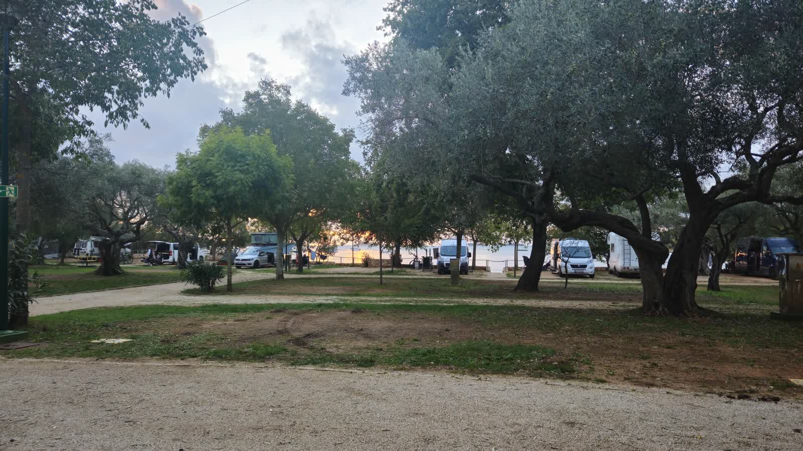

Galerija
Maslinik, plaža i zalasci.
Fotografije kampa, uvale Veštar i sadržaja koje koristite tijekom boravka. Kliknite na sliku za povećanje.

Fotografije kampa, uvale Veštar i sadržaja koje koristite tijekom boravka. Kliknite na sliku za povećanje.
